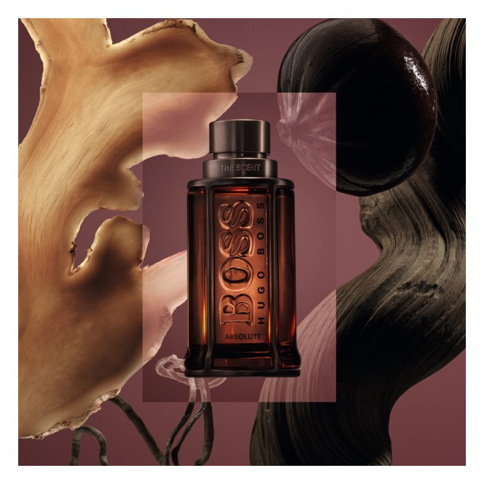

| Note de varf | GHIMBIR |
| Note de inima | MANINKA |
| Note de baza | VETIVER |
| Grupe de parfumuri | ORIENTALE, PICANTE |
Parfumului BOSS The Scent Absolute i se atribuie efecte aproape afrodiziace. Este o reinterpretare mai întunecată și mai bogată a emblematicului BOSS The Scent. The Scent este o expresie a atracției senzuale, urmată acum de capitolul al 2-lea, varianta Absolute. Ingredientele sunt amplificate atât de mult, încât parfumul devine sinonim cu pasiunea, forța și senzualitatea captivantă. Și de această dată, imaginea parfumului este carismaticul Jamie Dornan. Fotomodelul Brigit Kos își împrumută chipul perfect versiunii pentru femei a parfumului BOSS The Scent Absolute.
